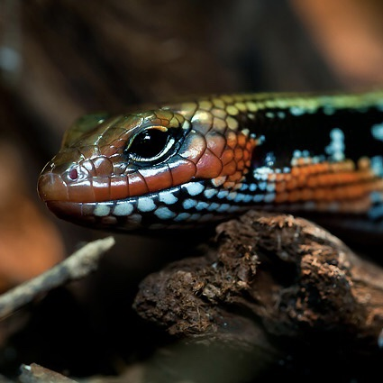

1. Gady definicja
Gady (Reptilia, od łac. repto – czołgać się) – parafiletyczna grupa zmiennocieplnych owodniowców. Współczesne gady są pozostałością po znacznie większej grupie zwierząt, której największy rozkwit przypadł na erę mezozoiczną. Obecnie żyją tylko cztery rzędy gadów, ich pozostałe znane linie ewolucyjne wymarły. Niektóre kopalne gady naczelne, czyli archozaury (takie jak pterozaury i dinozaury), były prawdopodobnie zwierzętami stałocieplnymi.  W tradycyjnej linneuszowskiej klasyfikacji kręgowców gady wyodrębniano jako gromadę, do której zaliczano wszystkie owodniowce z wyjątkiem ptaków i ssaków. Jednak tak definiowana gromada gadów jest parafiletyczna, gdyż należą do niej przodkowie ptaków i ssaków, lecz obie te gromady nie są do niej zaliczane. Prof. Michael J. Benton zaproponował, by wyłączyć z gromady gadów synapsydy (Synapsida), podnoszone przez tego autora do rangi odrębnej gromady[1]. Niektórzy naukowcy podejmowali też próby przedefiniowania gadów, tak by stały się grupą monofiletyczną. Np. Gauthier, Kluge i Rowe (1988) zdefiniowali Reptilia jako grupę obejmującą ostatniego wspólnego przodka współczesnych żółwi i przedstawicieli kladu Sauria (obejmującego grupy Lepidosauromorpha i Archosauromorpha) oraz wszystkich jego potomków[2]; z kolei Laurin i Reisz (1995) zdefiniowali Reptilia jako klad obejmujący ostatniego wspólnego przodka żółwi i diapsydów oraz wszystkich jego potomków[3]. Nie jest pewne, jakie zwierzęta należałyby do gadów w wypadku przyjęcia którejś z tych definicji (m.in. ze względu na niepewną pozycję filogenetyczną żółwi – tradycyjnie zaliczanych do anapsydów, ale w niektórych nowszych publikacjach uznawanych za diapsydy z kladu Sauria). Modesto i Anderson (2004) zdefiniowali Reptilia jako największy (obejmujący najwięcej gatunków) klad, do którego należą gatunki Lacerta agilis i Crocodylus niloticus, ale do którego nie należy Homo sapiens[4]. W wypadku przyjęcia którejś z tych definicji do gadów należałyby ptaki, natomiast nie należałyby do nich synapsydy.
{kind=link}
2. Gady cechy budowy ciała
Skóra
Skóra gadów jest sucha, szorstka lub delikatna, wytwarzająca rogowe tarcze(wytwory skóry właściwej) (żółwie i krokodyle) lub tarczki i łuski(wytwory naskórka) (jaszczurki, węże), nieprzepuszczalna dla gazów, nie mogą więc oddychać przez skórę. Miejsca styku łusek i tarczek są słabo zrogowaciałe, dzięki czemu gady zachowują dużą ruchliwość.
Szkielet
Szkielet gadów jest silnie skostniały i można go podzielić na szkielet osiowy (czaszka i kręgosłup) oraz szkielet pasów i kończyn.
Czaszka
Czaszka połączona jest z pierwszym kręgiem za pomocą jednego kłykcia potylicznego, który ma trzy powierzchnie stawowe (środkową i dwie boczne) – połączenie ruchome. Posiada otwory otoczone łukami kostnymi. Zmniejsza to ciężar czaszki bez utraty odporności mechanicznej. Na podstawie planu rozmieszczenia otworów wyróżnia się 4 typy czaszki: 1. anapsydalny – brak otworów skroniowych (anapsydy, współcześnie – żółwie) 2. synapsydalny – jedna para otworów skroniowych nie sięgających kości ciemieniowej, stykające się z łukiem jarzmowym (synapsydy – „gady ssakokształtne”) 3. euryapsydalny (parapsydalny) – jedna para otworów skroniowych, bliższych grzbietowi czaszki, nie stykających się z kośćmi jarzmowymi (wymarłe gady morskie) 4. diapsydalny – dwie pary otworów skroniowych. Czaszki współczesnych jaszczurek i węży pochodzą od tego typu, ale wiele składników uległo redukcji. Dawniej właśnie na podstawie liczby i rozmieszczenia otworów skroniowych w czaszce wyróżniano 4 główne grupy gadów – anapsydy, synapsydy, euryapsydy i diapsydy. Podział ten z czasem uległ jednak dużym zmianom; np. wyróżniane dawniej euryapsydy obecnie są generalnie uważane za diapsydy, które wtórnie straciły jedną parę otworów skroniowych. Zdaniem części naukowców diapsydami, które wtórnie straciły obie pary otworów skroniowych są żółwie (patrz niżej). Żółwie i krokodyle mają czaszkę akinetyczną, tzn. kości szczęki są zrośnięte z puszką mózgową. U węży kości szczęki połączone są z czaszką ruchomo za pomocą więzozrostów – jest to tzw. czaszka kinetyczna. Żuchwę gadów budują kości: zębowa, stawowa, nadkątowa, kątowa i wieńcowa. Kość kwadratowa łączy żuchwę z mózgoczaszką.
{kind=link}
Uzębienie
Brak u żółwi, u pozostałych dobrze rozwinięte. Zęby większości gadów, oprócz agam i kameleonów, podlegają stałej wymianie (polifiodontyzm). Wyróżniane są trzy typy osadzenia: akrodontyczne – osadzone podstawą na kościach szczęki lub żuchwy (u niektórych jaszczurek, np. Agam) pleurodontyczne – przytwierdzone z boku kości (u niektórych jaszczurek, np. legwanów) tektodontyczne – osadzone w zębodołach (tylko krokodyle) Zęby mogą występować na kościach szczękowych, żuchwie, lemieszu, kościach podniebiennych i skrzydlastych (formy prymitywne) lub na kościach szczękowych i żuchwie (formy młodsze filogenetycznie). U niektórych są podobne do siebie (homodontyzm), a u innych zróżnicowane (heterodontyzm).
Układ krwionośny
Układ krwionośny składa się z serca i naczyń krwionośnych. Serce zbudowane jest z dwóch przedsionków oraz komory podzielonej niepełną przegrodą na dwie części. W czasie skurczu przegroda przylega do górnej części serca, więc następuje dobre oddzielenie krwi żylnej od tętniczej. Jedynie u krokodyli przegroda jest pełna (serce z dwóch przedsionków i dwóch komór). Zatoka żylna gadów jest słabo rozwinięta. Z komory wychodzi pień tętniczy podzielony na 3 tętnice: tętnicę płucną (wychodzi z prawej komory i dzieli się na 2 gałęzie), aortę lewą i aortę prawą. Aorta prawa wychodzi z lewej komory i odchodzą od niej tętnice szyjne i tętnice podobojczykowe (u większości gadów), unaczyniające głowę i kończyny przednie. Aorta lewa wychodzi z komory prawej. Obie aorty łączą się w aortę grzbietową, od której odchodzą tętnice do narządów wewnętrznych, mięśni tułowia, kończyn tylnych i ogona. Do prawego przedsionka ujście mają 2 żyły główne i żyła tylna. Do lewego przedsionka wpadają 2 żyły płucne.
3. Ewolucja gadów
W karbonie z najprymitywniejszych owodniowców niezależnie powstały synapsydy, w których czaszce występował jeden (dolny) otwór skroniowy za każdym okiem, oraz zauropsydy. Synapsydy były dominującą grupą kręgowców lądowych w okresie permu i na początku triasu; w erze mezozoicznej dały początek ssakom. Zauropsydy rozdzieliły się na dwie główne linie ewolucyjne: anapsydy, charakteryzujące się czaszką pozbawioną otworów skroniowych, oraz diapsydy. Wśród anapsydów pojawiły się m.in.: parejazaury, wymarłe na przełomie permu i triasu, oraz nadrodzina Procolophonoidea wymarła pod koniec triasu. Z kolei diapsydy wykształciły czaszkę z dwoma parami otworów skroniowych (pary: dolna i górna). Dzięki obecności otworów skroniowych czaszka była lżejsza, a mięśnie miały więcej miejsca; w rezultacie szczęka stawała się silniejsza i bardziej ruchliwa. Diapsydy rozdzieliły się na kilka linii ewolucyjnych, w tym m.in. grupę Ichthyopterygia[6][7] (choć z analiz kladystycznych Mercka z 1997 r. oraz Modesto, Reisza i Scott z 2011 r. wynika, że Ichthyopterygia to bazalne archozauromorfy[8][9], zaś z analiz kladystycznych przeprowadzonych przez Maischa, 2010 wynika, że Ichthyopterygia mogły należeć do anapsydów[10]) oraz klad Sauria, obejmujący dwie główne linie: lepidozauromorfy, do których należą współczesne lepidozaury – węże, jaszczurki, amfisbeny i hatterie; większość autorów zalicza do tej grupy także wymarłe morskie zauropterygi[6][7][11] (choć z analiz Mercka z 1997 r. oraz Modesto, Reisza i Scott z 2011 r. wynika, że zauropterygi są bazalnymi archozauromorfami[8][9]) archozauromorfy, obecnie reprezentowane tylko przez krokodyle i ptaki, ale wcześniej do tej grupy należały m.in.: pterozaury i dinozaury Przedmiotem sporów pozostaje pozycja filogenetyczna żółwi. Tradycyjnie były one zaliczane do anapsydów i uznawane za potomków Procolophonoidea[3] lub parejazaurów[12] albo za takson siostrzany do eunotozaura[13]. Niektóre analizy filogenetyczne sugerują jednak, że w rzeczywistości są one diapsydami należącymi do kladu Sauria. Analizy wykorzystujące cechy morfologiczne wskazują na przynależność żółwi do lepidozauromorfów, generalnie sugerując bliskie pokrewieństwo z zauropterygami[11][14] (choć w analizie Müllera, 2004 żółwie są bliżej spokrewnione z lepidozaurami niż z zauropterygami[7]); większość analiz opierających się na badaniach genetycznych sugeruje przynależność żółwi do archozauromorfów[15][16][17][18], jednak z analizy Lysona i współpracowników (2011) wynika ich bliższe pokrewieństwo z lepidozaurami.